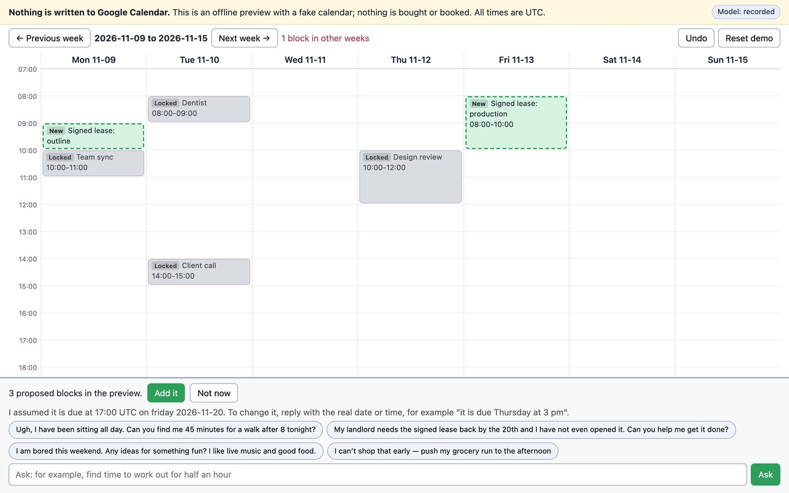

Plan Calendar
A calendar assistant that turns one sentence into a schedule around your existing events, and writes to Google Calendar only after you confirm.
Built in November 2026 as a proposal for the Ask feature in Furever Dock.

The problem
People describe plans the way they talk: “My landlord needs the signed lease back by the 20th.” The assistant has to find the deadline, plan steps before it, avoid fixed events and never touch the real calendar without permission.
How it works
- The model only reads the request and explains the result.
- A rule engine builds the schedule: buffers around fixed events, focus blocks with breaks, protected weekend time.
- A separate checker verifies every rule before anything is shown.
- The preview shows new blocks in green; nothing is saved until you add them, and undo is always there.
What the checker caught
Running the checker rule by rule found rules the engine had not implemented yet, such as backup slots, no back-to-back draining tasks and replanning only the affected steps after an interruption. It also caught one leisure activity the engine had invented. All were fixed.
Results
All 31 rules held with zero violations across 500 random schedules. Four prompts were validated on 40 test inputs, and the work shipped as two product documents and a 65-second demo video.